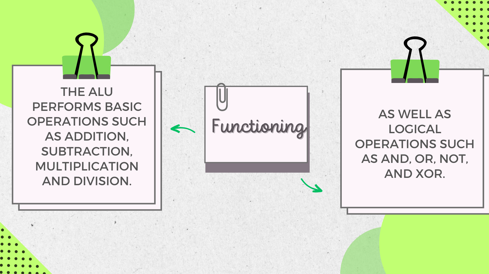
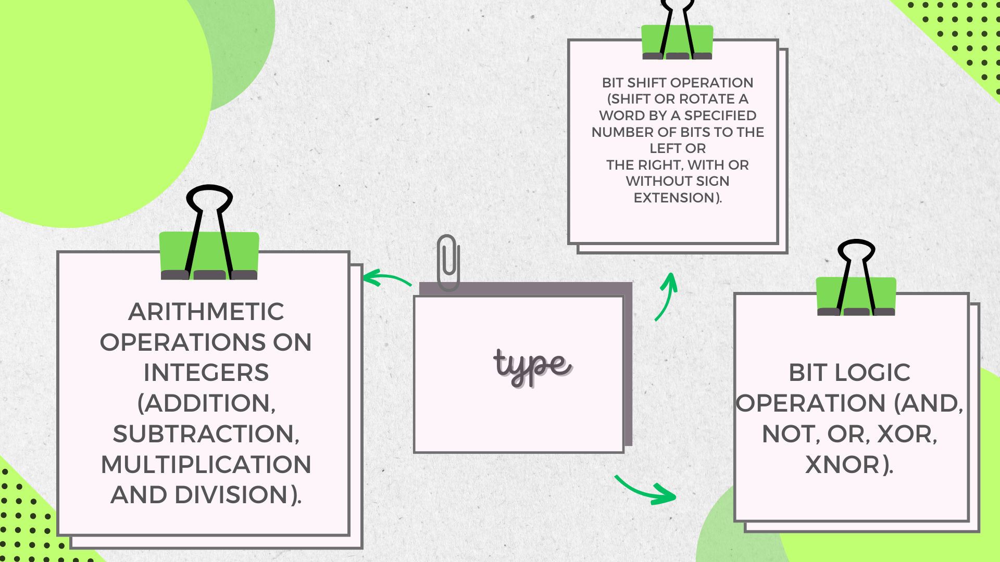
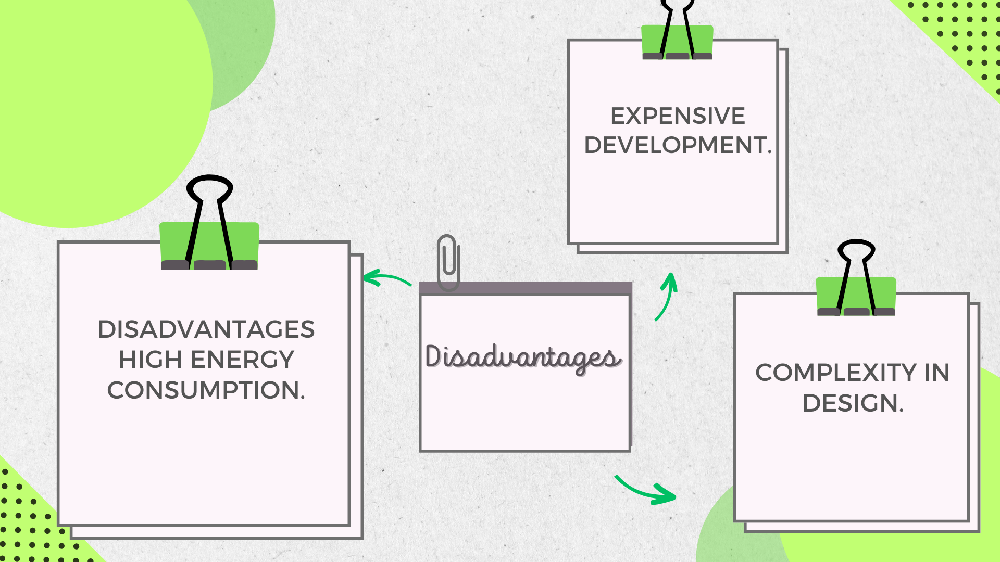
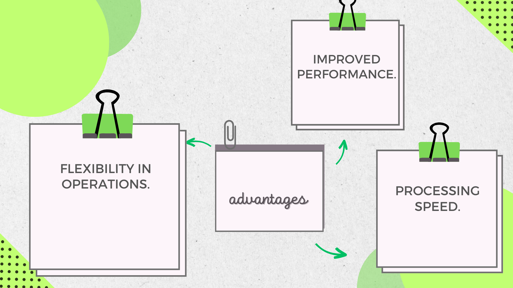

Herbolaria "Artemisa"
"Bienvenido al mundo naturista"
ALU (Arithmetic Logic Unit).
..png)
functioning
type
disadvantages
advantages
Block diagram of arithmetic and logic unit
A typical schematic symbol for an ALU: A and B are operands; R is the output; F is the control unit input; D is a state of the output.